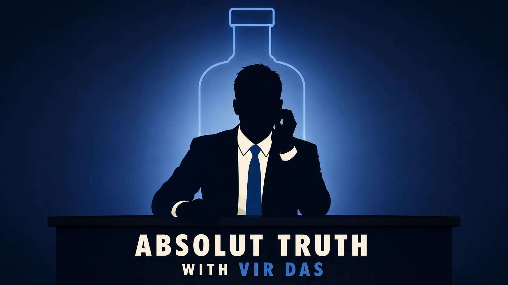

Absolut Truth with Vir Das
Connecting Absolut with a new generation of Indians, in a market where alcohol can't be advertised.
Context
Absolut is a global vodka brand that wants cultural relevance with young, urban India: the English-speaking, higher-income millennials and Gen Z that premium brands compete for. The brief was a branded-content concept to build that relevance.
Problem
You cannot legally advertise alcohol in India. No spot for the bottle, no billboard. The category's usual workarounds, a logo on a music stage or a star holding "soda", are weak and easy to ignore, and this audience grew up on advertising and mostly tunes it out. The job was to make something young India would choose to watch, with Absolut credibly part of it.
Insight
Young India is not a passive audience. Deloitte's 2024 India survey found Gen Z and younger millennials are values-driven and engaged with real issues, with the cost of living their single biggest concern (Deloitte India, 2024). They will sit with hard subjects, but they want them in their own language, not a lecture.
That lines up with Absolut. The brand's global platform is "Create a Better Tomorrow, Tonight", and its recent India work has centred on self-expression and challenging norms, from the Osheen Siva limited-edition bottle celebrating young Indian identity (NuFFooDS) to the #AbsolutAlly campaign. A show that takes on hard truths, with humour, fits a brand that already stands for free expression and a sharper point of view. The name is a neat bonus (Absolut, absolute truth), but the real fit is the values.
So the idea: real investigative journalism, packaged as comedy. Picture Satyamev Jayate, but funny.
Strategy
Position Absolut as a brand that leads rather than follows: sharp, and willing to back a show that says what others tiptoe around. The vehicle is branded content, the brand funds and presents a show rather than advertising the product, which is also the only legal route for alcohol in India.
The host carries the strategy. Vir Das has a reputation for telling hard truths and challenging received wisdom, he is articulate, and his fan base runs across both millennials and Gen Z. His comedy about India is credible at the highest level: he won the 2023 International Emmy for Best Comedy for Vir Das: Landing (International Emmy, 2023).
Goal: relevance and recall with young urban India, not a short-term sales bump. KPIs: reach and views, engagement and shares, watchlist adds and sentiment, streams and completion rate, and a pre/post brand-recall lift as the headline number.
Supporting work: the budget
Execution
A six-episode investigative-comedy series hosted by Vir Das, in the Last Week Tonight with John Oliver model: one real issue per episode, researched properly, then made funny. Episode one, "The Delayed Generation", on why young India feels locked out of the milestones their parents reached on time, which maps straight onto that audience's top worry, the cost of living.
Platform is part of the idea, not an afterthought. India's main attempt at this news-comedy format, AIB's "On Air with AIB", ran on mainstream TV, where content limits and audience fit worked against it (Wikipedia). Netflix is the right home: on-demand, permissive, and where this audience already is.
Vir Das is not a brand-safety unknown either: Pernod Ricard, Absolut's owner, has already worked with him on Chivas Regal's "New Regals" (Esquire India).
One bit of product thinking: a limited-edition bottle with a "Truth or Drink with Vir Das" QR that opens an interactive clip, turning the bottle into a way into the show. Costed at about ₹9 crore all-in, benchmarked to real market rates.
Impact
It is a concept, so there are no results yet. Here is what I would target, and the reasoning behind each number.
- Brand recall (the headline metric). Nielsen finds branded content drives around 86% brand recall versus 65% for pre-roll ads, and content carried on a publisher's network like Netflix sees roughly 50% higher brand lift (Nielsen, via Second Street). For the same spend, this should beat a standard pre-roll campaign on recall. Target: a clear pre/post recall lift with young urban India, measured by survey.
- Reach: tens of millions, target 40M+ across the launch. Absolut's sister platform Large Short Films has reached 267M+ as content over time (BuzzInContent); a single flagship series carrying Vir Das's following and eleven guests' audiences, with the marketing spread across the funnel and weighted toward this audience, can credibly aim for 40M+ in the window.
- Engagement and intent. Above-benchmark shares (the show is built to be clipped) and a measurable lift in brand search interest during the run.
This was about building cultural relevance and long-term brand equity with a new generation of customers, not a short-term spike in sales.